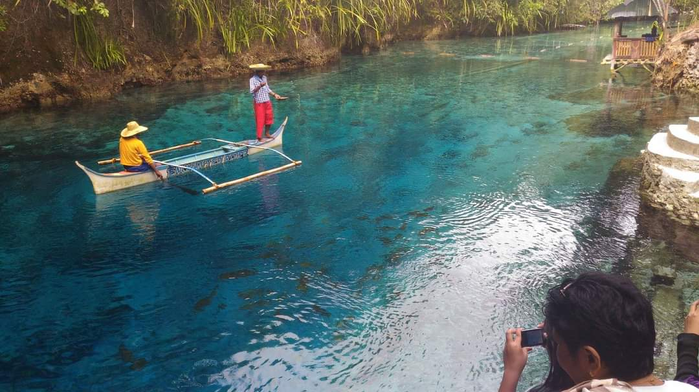
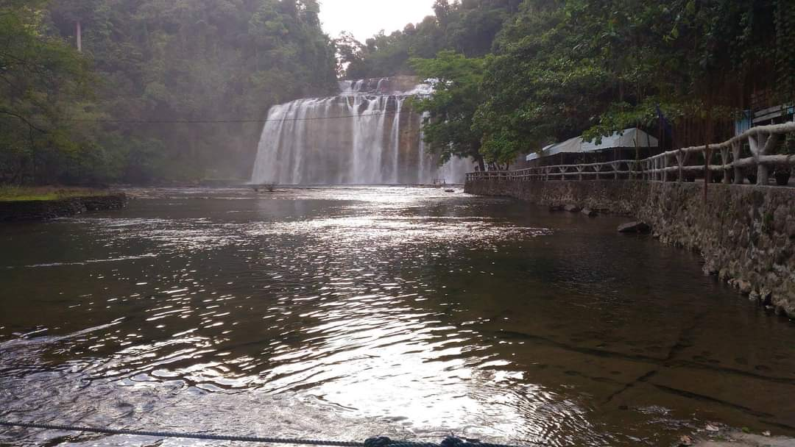
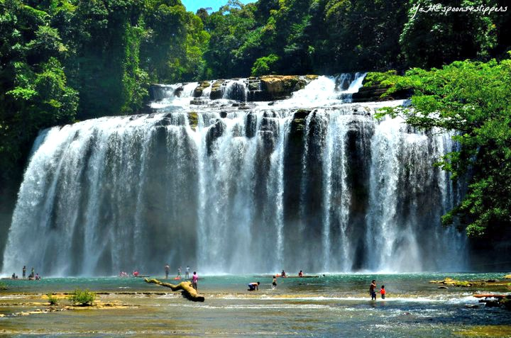

• ENCHANTED RIVER

Enchanted River is a wonder of nature found in Hinatuan, Surigao del Sur. Its bluish color attracts visitor and made everyone admire the place in awe as the water remains clear even in the rainy and monsoon season. The depth remains unexplored as of this writing since the river has a deep cave system and the deeper area are mixed of salt and freshwater. Witness the feeding of different fish species living in its clear water that was conducted by a staff riding in a boat with a mesmerizing background music. Its name was derived from the word “enchantment” which is exactly how you feel when you visit the place.
• TINUY-AN FALLS


Tinuy-an falls is a three-tier waterfalls situated in the mountainous area of Bislig City, Surigao del Sur. It was hailed as the Niagara Falls of the Philippines because of its wide and height measuring approximately 95meters and 55meters respectively. You can climb the higher level of the falls using a stairway installed at the right portion of the Main Waterfalls. You can also ride a “balsa” going to the main waterfall’s foot where the water fell and experience Massage-like feeling. You can sometimes see a rainbow at the waterfalls anytime in the morning which adds to its attraction. Calendars of different agencies already featured the place because of its picture perfect attribute.